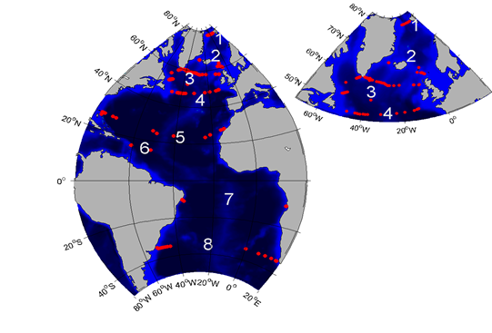

| |
|
2. GSR Greenland Scotland Ridge 3. OSNAP Overturning in the Subpolar North Atlantic Program 4. NOAC North Atlantic Changes 6. MOVE Meridional Overturning Variability Experiment 8. SAMBA-SAMOC South Atlantic Meridional Overturning Circulation
|
AtlantOS Transport Mooring ArraysTransport mooring arrays (TMAs) installed in key locations in the Atlantic represent a relevant element of the integrated Atlantic observing system. The great value of TMAs is the acquisition of long time series of volume, heat and freshwater fluxes in locations of strong flows, all of which are related to the Atlantic meridional overturning circulation (AMOC). Within the framework of the EU project "AtlantOS - Optimising and Enhancing the Integrated Atlantic Ocean Observing Systems" (www.atlantos-h2020.eu) the work package 3.3 focuses on TMAs. The overarching goal of WP3.3 is the development of a sustainable, efficient and comprehensive network of TMAs that is well imbedded into the Atlantic observing system. In this regard, the web site shall serve as a one-stop-shop for TMAs. It provides technical and scientific information on the network of TMAs and offers access to high-level data products (transport time series).  |